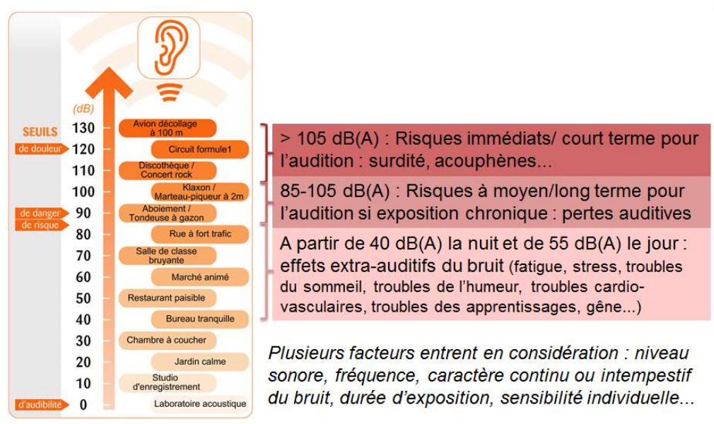
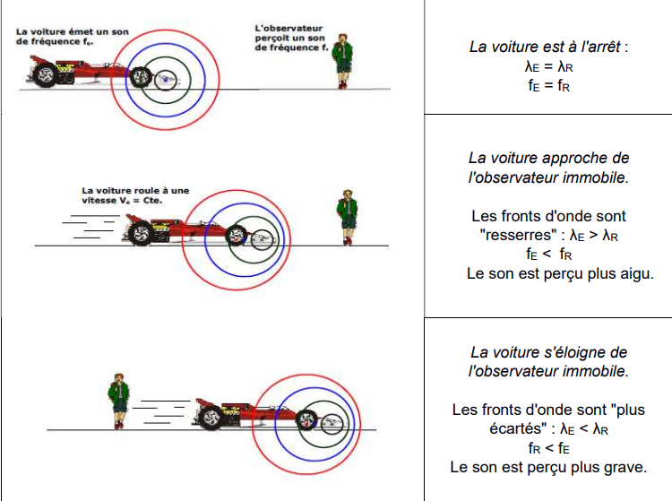

Rappel — fonction logarithme décimal
La fonction logarithme décimal, notée log, est définie pour tout nombre x > 0. C'est la fonction réciproque de la fonction x ↦ 10x. Elle vérifie en particulier :
- log(1) = 0 et log(10) = 1 ;
- log(a × b) = log(a) + log(b) ;
- log(10n) = n, pour tout entier n ;
- fonction réciproque : si y = log(x) alors x = 10y.
📝 QCM interactif de prérequis
Teste tes acquis sur la caractérisation des phénomènes ondulatoires avant de commencer la séquence :
🎬 Vidéo — Le cours en intégralité
Une présentation vidéo de l'ensemble de la séquence (ondes sonores, intensité, niveau sonore) :
Intensité sonore
L'intensité sonore I est la puissance sonore transportée par unité de surface :
Niveau d'intensité sonore (niveau sonore)
La sensation physiologique produite par un son d'intensité sonore I est traduite par le niveau sonore L, exprimé en décibels (dB) :

🎚️ Calculatrice interactive — Niveau sonore
Déplace le curseur pour faire varier l'intensité sonore I et observe l'évolution du niveau sonore L, ainsi que sa position sur l'échelle des sons usuels.
📝 Exercice d'application — Doubler le niveau sonore
Pour N sources identiques et incohérentes réunies, l'intensité totale est multipliée par N par rapport à celle d'une seule source, donc le niveau sonore devient :
On cherche N tel que LN = L₂ = 120 dB :
À quoi cela correspond-il ? Un établissement scolaire compte en moyenne de l'ordre de 1 000 élèves. Réunir 1 000 000 de sources sonores identiques reviendrait donc à faire parler simultanément tous les élèves de 1 000 établissements scolaires ! Ce nombre considérable illustre bien le caractère logarithmique, et non linéaire, de l'échelle des décibels : doubler la sensation sonore perçue nécessite de multiplier l'intensité par un facteur immense, sans commune mesure avec un simple doublement du nombre de sources.
📘 Exercices du manuel
Exercices sur les intensités sonores : n° 11, 15, 19, 22, 32 et 42 p.400 à 413.
Atténuation géométrique
Une onde sonore se propage dans les trois dimensions de l'espace : la puissance émise par la source se répartit donc sur une surface de plus en plus grande à mesure que l'on s'éloigne. L'intensité sonore diminue ainsi avec la distance, même en l'absence de tout obstacle : on parle d'atténuation géométrique.
🖥️ Simulation PhET — Observer l'atténuation géométrique
Ouvre la simulation Sound Waves (PhET Colorado, en français). Active le son, laisse la fréquence et l'amplitude au centre, puis déplace le petit personnage (l'auditeur) du haut-parleur vers le bord de l'écran, en observant à la fois les ondes affichées et le volume perçu.
La puissance sonore P émise par la source se répartit sur une surface S qui augmente avec la distance parcourue (en 3D, cette surface est celle d'une sphère centrée sur la source, S = 4πd²). Comme I = P/S, plus S est grande, plus I est faible : l'énergie sonore n'est pas perdue, elle est seulement répartie sur une surface plus vaste, d'où la diminution du volume perçu par l'auditeur qui s'éloigne, même en l'absence de tout obstacle.
Atténuation par absorption
Lorsqu'un son traverse un milieu matériel (mur, casque, vitrage...), une partie de sa puissance est absorbée par ce milieu : l'intensité sonore diminue alors du fait de cette traversée. On parle d'atténuation par absorption.
🎧 Exercice interactif — Casque anti-bruit
Or A = 10·log(Iincident/Itransmis), donc :
Le casque anti-bruit divise donc l'intensité sonore perçue par un facteur d'environ 3 160, ce qui correspond à une nette amélioration du confort auditif.
📘 Exercices du manuel
Exercices sur l'atténuation : n° 21 et 33 p.403-404, ainsi que l'annale « Casque anti-bruit ».
Qu'est-ce que l'effet Doppler ?
L'effet Doppler est la variation de fréquence d'une onde entre son émission et sa réception, lorsque la distance entre l'émetteur et le récepteur varie au cours du temps. Le récepteur perçoit alors une fréquence fR différente de la fréquence fE émise par la source.
🎬 Regarder la vidéo

🚗 Animation interactive — Fronts d'onde d'une source mobile
Règle la vitesse de la source à l'aide du curseur, puis observe la déformation des fronts d'onde autour d'un observateur fixe (croix noire). Compare le son perçu lorsque la source approche puis s'éloigne de l'observateur.
Rappels — ondes périodiques
- La longueur d'onde λ est la distance parcourue par l'onde pendant une période temporelle T.
- La période temporelle T (en s) est la plus courte durée pour laquelle le phénomène se reproduit identique à lui-même. La fréquence (en Hz) est le nombre de phénomènes par seconde : f = 1/T.
- La vitesse d'une onde est donnée par la relation : vonde = λ/T = λ × f.
- La vitesse d'un corps est donnée par la relation : v = distance parcourue / durée du parcours.
🖥️ Simulation Ostralo — Fronts d'onde d'un émetteur mobile
Ouvre la simulation Effet Doppler (Ostralo). Mets l'émetteur en marche, puis déplace-le vers le récepteur fixe. Utilise la pause pour figer l'image et observer précisément l'espacement des fronts d'onde de part et d'autre de l'émetteur.
🖥️ Ouvrir la simulation Ostralo
À l'arrêt, l'émetteur reste au centre de fronts d'onde circulaires régulièrement espacés et symétriques dans toutes les directions : λE = λR et fE = fR pour tout récepteur, quelle que soit sa position. C'est le mouvement de l'émetteur qui « casse » cette symétrie et provoque le décalage Doppler.
Décalage Doppler
Le décalage Doppler, noté Δf (en Hz), est la différence entre la fréquence reçue fR et la fréquence émise fE :
🎬 Regarder la vidéo
Un observateur fixe observe une source (par exemple une voiture) se déplaçant à la vitesse constante v et émettant des « bips » avec une période TE. La distance entre la source et l'observateur, à l'instant du premier bip, est notée D. Entre l'émission d'un bip et le suivant, la source s'est rapprochée d'une distance d = v × TE : il lui reste alors une distance D − d à parcourir pour atteindre l'observateur.
À t = 0 s, la source émet un premier bip, situé à la distance D de l'observateur. Celui-ci le perçoit à l'instant :
À t = TE, la source émet un second bip, désormais situé à la distance D − d de l'observateur (avec d = v × TE). Celui-ci le perçoit à l'instant :
Comme v > 0 et vonde − v > 0, on a Δf > 0, donc fR > fE : le son est perçu plus aigu, conformément à l'observation qualitative.
✏️ À toi de compléter le raisonnement
La situation est identique au Cas n°1, mais la source s'éloigne désormais de l'observateur : entre deux bips, la distance Source–Observateur augmente de d = v×TE au lieu de diminuer. Sélectionne, à chaque étape, l'expression correcte.
La source s'éloignant, la distance Source–Observateur à l'instant TE vaut D + d (et non D − d comme dans le cas n°1).
Ici Δf < 0, donc fR < fE : le son est perçu plus grave, ce qui est cohérent avec l'observation qualitative d'une source qui s'éloigne.
🖥️ Prise en main du simulateur
Avant de commencer les activités, ouvre le simulateur et repère ses commandes (mise en mouvement de la voiture, réglage de la vitesse, écoute, relevé graphique) :
1️⃣ Détermination de la vitesse de la voiture
Objectif : utiliser l'effet Doppler pour calculer une vitesse.
À partir des fréquences émise fE et reçue fR relevées sur le simulateur, tu dois retrouver la vitesse v de la voiture en inversant l'expression du décalage Doppler établie dans l'onglet D (cas de l'approche ou de l'éloignement selon la situation proposée).
Calculer la vitesse v de la voiture.
Méthode : on repart de l'expression du décalage Doppler établie dans l'onglet D, et on l'inverse pour isoler v.
2️⃣ Radar « à l'oreille »
Objectif : déterminer la fréquence perçue par l'observateur.
Comme la vitesse d'un véhicule (quelques dizaines de m/s) est très petite devant la vitesse du son (vonde ≈ 340 m/s), l'expression exacte du décalage Doppler peut être remplacée par une expression approchée, plus simple à exploiter « à l'oreille ». Tu vas comparer cette approximation à l'expression exacte vue dans l'onglet D.
Calculer la fréquence perçue fR avec l'expression exacte, puis avec l'expression approchée, et comparer les deux résultats.
L'écart entre les deux expressions reste faible (≈ 1 %) pour une vitesse de véhicule usuelle : l'approximation « à l'oreille » est donc satisfaisante dans ce contexte, mais elle ne serait plus valable pour v proche de vonde.
3️⃣ Paramètres d'influence
Objectif : étudier l'influence de la vitesse de la voiture sur l'onde sonore.
En relevant la longueur d'onde, la période et la fréquence du signal à l'arrêt puis pour différentes vitesses de la voiture, tu vas vérifier expérimentalement quelles grandeurs varient avec v (et lesquelles restent inchangées), en cohérence avec les rappels sur les ondes périodiques de l'onglet C.
Déterminer la période TR, la fréquence fR et la longueur d'onde λR perçues par l'observateur, puis comparer vonde avant et après la mise en mouvement de la source.
Bilan : la période et la fréquence perçues changent avec la vitesse de la source, tout comme la longueur d'onde. En revanche, vonde ne dépend que du milieu de propagation (l'air) : elle reste égale à 340 m·s⁻¹, que la source soit à l'arrêt ou en mouvement.
4️⃣ Décalage Doppler
Objectif : relier période, fréquence et effet Doppler.
À partir d'un relevé graphique des périodes émise TE et reçue TR, tu vas retrouver les fréquences correspondantes (f = 1/T), calculer le décalage Doppler Δf, puis en déduire la vitesse de la source — une application numérique complète de la démarche établie pas à pas dans l'onglet D.
Déterminer les fréquences fE et fR, le décalage Doppler Δf, puis la vitesse v de la voiture.
On retrouve la démarche complète : lecture graphique → périodes → fréquences → décalage Doppler → vitesse, en réutilisant l'expression établie pas à pas dans l'onglet D.
5️⃣ Longueur d'onde et vitesse
Objectif : établir une relation entre longueur d'onde et vitesse de propagation.
À partir des relations T = 1/f et vonde = λ/T, tu vas établir puis exploiter la relation λ = vonde/f, valable aussi bien pour une onde sonore que pour une onde électromagnétique (utile pour l'annale « Galaxie d'Andromède » de l'onglet D).
Établir la relation entre λ et vonde à partir de T = 1/f et vonde = λ/T, puis calculer la longueur d'onde λ correspondante.
Cette relation λ = vonde/f est générale : elle s'applique aussi bien à une onde sonore (vonde = célérité du son) qu'à une onde électromagnétique (λ = c/f), comme dans l'annale « Galaxie d'Andromède » de l'onglet D.
6️⃣ Précision d'une mesure
Objectif : évaluer une incertitude de mesure.
En répétant plusieurs fois un même chronométrage sur le simulateur, tu vas calculer une valeur moyenne et une incertitude-type (écart-type) associées à cette mesure — une compétence expérimentale transversale, indépendante du contexte de l'effet Doppler mais mobilisable dans toute mesure répétée en physique-chimie.
Calculer la valeur moyenne T̄, l'incertitude-type u(T), puis exprimer le résultat sous la forme T = T̄ ± U(T) avec un facteur d'élargissement k = 2.
Cette démarche d'évaluation d'une incertitude de type A (mesures répétées) est transversale : elle s'applique à toute mesure expérimentale en physique-chimie, pas seulement à l'effet Doppler.
Intensité et niveau sonore
I = P/S (en W·m⁻²)
L = 10·log(I/I₀), avec I₀ = 10⁻¹² W·m⁻² (seuil d'audibilité). Mesure : sonomètre.
Atténuations (toujours A > 0)
Géométrique : A = Lproche − Léloigné = 10·log(Iproche/Iéloigné)
Par absorption : A = Lincident − Ltransmis = 10·log(Iincident/Itransmis)
Effet Doppler — description qualitative
- Source à l'arrêt : λE = λR, fE = fR.
- Source qui approche : fronts d'onde resserrés, fR > fE → son plus aigu.
- Source qui s'éloigne : fronts d'onde écartés, fR < fE → son plus grave.
Décalage Doppler (observateur fixe, source mobile)
Δf = fR − fE
Approche : Δf = fE × v/(vonde − v)
Éloignement : Δf = − fE × v/(vonde + v)
- Le niveau sonore L, exprimé en dB, est une grandeur logarithmique adaptée à l'étendue de sensibilité de l'oreille humaine.
- L'atténuation géométrique traduit la répartition de l'énergie sur une surface croissante ; l'atténuation par absorption traduit une perte d'énergie lors de la traversée d'un milieu matériel.
- Une atténuation est toujours positive.
- L'effet Doppler est une propriété générale des ondes : il se manifeste dès que la distance émetteur-récepteur varie au cours du temps.
- Source qui se rapproche ⟹ fréquence perçue plus élevée (son plus aigu) ; source qui s'éloigne ⟹ fréquence perçue plus faible (son plus grave).
- Le décalage Doppler Δf = fR − fE permet, en pratique, de déterminer la vitesse d'une source à partir des fréquences émise et reçue.
Intensité sonore I
Puissance sonore reçue par unité de surface : I = P/S, exprimée en W·m⁻².
Niveau d'intensité sonore L
Grandeur logarithmique adaptée à l'étendue de sensibilité de l'oreille humaine : L = 10·log(I/I₀), avec I₀ = 10⁻¹² W·m⁻² le seuil d'audibilité ; mesuré à l'aide d'un sonomètre.
Atténuation géométrique
Diminution du niveau sonore due à la répartition de l'énergie sur une surface croissante à mesure que l'on s'éloigne de la source : A = Lproche − Léloigné, toujours positive.
Atténuation par absorption
Diminution du niveau sonore due à une perte d'énergie lors de la traversée d'un milieu matériel : A = Lincident − Ltransmis, toujours positive.
Effet Doppler
Modification de la fréquence perçue par un récepteur lorsque la distance qui le sépare de la source varie au cours du temps ; propriété générale des ondes (sonores ou électromagnétiques).
Décalage Doppler Δf
Différence entre la fréquence reçue et la fréquence émise : Δf = fR − fE ; positif si la source se rapproche (son plus aigu), négatif si elle s'éloigne (son plus grave).
Fréquence émise fE
Fréquence de l'onde produite par la source, telle qu'elle serait perçue si la distance source-récepteur restait constante.
Fréquence reçue fR
Fréquence de l'onde effectivement perçue par le récepteur, modifiée par l'effet Doppler lorsque la source est en mouvement relatif par rapport à lui.
▶ Cours 1 — Ondes sonores
Sciences physiques à Stella
▶ Intensité sonore et niveau d'intensité sonore
Florence Raffin
▶ L'effet Doppler, en 2 minutes
ScienceClic
▶ Établir l'expression du décalage Doppler
spcbad
▶ Effet Doppler
CEA
▶ Effet Doppler — Décalage — formules
TERMINALE spé. PC BAC
📝 QCM — Prérequis
Hatier-clic · Caractériser les phénomènes ondulatoires
📝 QCM — Maîtrise des notions
Hatier-clic
L'effet Doppler doit son nom au physicien autrichien Christian Doppler (1803-1853), qui l'a décrit pour la première fois en 1842. Ce phénomène, valable pour toutes les ondes (sonores comme électromagnétiques), a depuis trouvé de nombreuses applications : radars de vitesse, échographie Doppler en médecine, ou encore mesure du décalage spectral des galaxies en astrophysique.